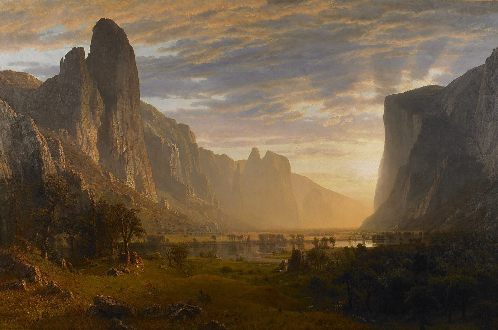

Grand TourItinéraires et destinationsSéquences prêtes à l'emploi · Français, anglais · Tous niveaux
Yosemite: Who Is Nature For?

Œuvre en domaine public : Albert Bierstadt, Looking Down Yosemite Valley, California, 1865, huile sur toile, Birmingham Museum of Art (Alabama), 1991.879. Image : Wikimedia Commons, domaine public.
In Context
Observe, question, decide
Take part in a town hall meeting on the park's plan for the next hundred years.
Télécharger la séquence, Student version (Arial 16 pt, lisible en Dys-friendly version)
Anglais · Première, lycée général et technologique · Tronc commun, LVA B1+ (LVB : B1, avec les encadrés Help)
En 1864, en pleine guerre de Sécession, les États-Unis décident qu’une vallée de Californie appartiendra « pour toujours » au public. Mais qui est ce public ? Les visiteurs, les peuples qui y vivaient, les villes qui ont besoin d’eau, ou la nature elle-même ? Yosemite pose la question de l’axe 5 : comment préserver la nature, l’exploiter, et s’y adapter ?
Six lessons de 55 minutes, minutées sur 52, et une évaluation au format de l’évaluation ponctuelle de Première, en Teacher version.
Thème
Les parcs nationaux, outils de préservation de la nature (objet d’étude de l’axe 5), avec la sacralisation de la nature dans l’art et la place des Peuples premiers.
Niveau
Première, lycée général et technologique. CECRL : LVA B1+ (vers B2 en compréhension) ; LVB B1.
Problématique
Who is nature for, and who decides how to protect it?
Objectifs
Analyser un tableau et un texte de loi ; comprendre un exposé et un reportage ; confronter des points de vue (préserver, exploiter, partager) ; jouer une réunion publique et rédiger une proposition argumentée. Langue : les modaux de déduction (must have, might have, can’t have), shall et must dans les textes officiels, le passif, la comparaison d’opinions (would rather), too et enough, la proposition (suggest that, should).
Ancrage culturel
Albert Bierstadt et la peinture de l’Ouest américain ; le Yosemite Grant signé par Abraham Lincoln (1864) ; le parc national (1890) ; les Ahwahneechee et les sept tribus traditionnellement associées à Yosemite ; John Muir, le Sierra Club (1892), Theodore Roosevelt (1903) ; le barrage de Hetch Hetchy ; la fréquentation et les incendies d’aujourd’hui.
Axe
Axe principal : axe 5, L’être humain et la nature. Axe secondaire : axe 2, Diversité et inclusion, parce que l’histoire du parc pose la question de la place des Peuples premiers, chassés de la vallée en 1851 et aujourd’hui associés à sa gestion.
Overview (Teacher version)
Public : Première, lycée général et technologique, Tronc commun (arrêté du 5 mai 2025, BO n° 22 du 29 mai 2025). L’axe 5 est l’axe principal (objet d’étude « Les Parcs Nationaux, outils de préservation de la nature ») ; l’axe 2 est en appui (« Représentation politique des Peuples premiers »).
Language activities : compréhension de l’écrit (lessons 1, 2, 4), compréhension de l’oral (lessons 3 et 5), expression écrite (toutes, et la tâche finale), expression orale en continu et interaction (toutes, réunion publique en lesson 6).
Documents : un tableau en domaine public (Bierstadt), deux textes authentiques en domaine public (le Yosemite Grant de 1864, John Muir en 1901 et 1912), des textes d’entraînement écrits pour la classe à partir de faits vérifiés, et deux transcripts à lire en classe.
Chaque lesson suit le même ordre : question du jour, document lu avec la spirale de Gorse, Expanding your vocabulary, Étude de la langue, exercices avec corrigés derrière Show the answer, oral et interaction, trace écrite, homework ; point d’arrêt et Plan B de 8 minutes.
Évaluation en Teacher version : grille de la tâche finale et sujet au format de l’évaluation ponctuelle de Première (1 h 30, compréhension de l’écrit et expression écrite, 10 + 10).
Lessons at a glance
Lesson
Titre
Activités
Étude de la langue
1
Painting a Paradise
CE PO PI PE
les modaux de déduction au passé
2
“For All Time”: The Yosemite Grant
CE PO PE
shall et must dans les textes officiels ; le passif
3
Whose Valley? The Ahwahneechee
CO PO PI PE
le discours rapporté
4
Muir, Roosevelt and the Hetch Hetchy Dam
CE PO PI PE
exprimer une préférence : would rather, prefer, had better
5
Loved Too Much? Crowds and Fire
CO CE PO PE
too, enough, so, such
6
A Town Hall for the Next Hundred Years
PI PO PE CE
faire une proposition : suggest, should, it would be better
If a student cannot attend class or is in hospital
Chaque lesson a son parcours, en bas de la lesson : 30 à 40 minutes, consignes à l’infinitif, une version courte de 15 minutes.
Les réponses s’ouvrent avec « Show the answer », après avoir cherché.
Pour l’oral, s’enregistrer ; pour l’interaction et la réunion publique, écrire les rôles et les enregistrer, ou faire l’échange au téléphone avec l’enseignante.
Recopier la trace écrite et envoyer le travail par l’ENT. L’enseignante transmet l’évaluation par l’ENT : la faire sans aide, en 1 h 30, en notant l’heure de début et de fin.
Lesson 1 · Painting a Paradise
Getting started
On arrival, while the teacher takes the register:
In your rough book, copy the title of this lesson: Painting a Paradise. Then write one sentence: What I already know is… and one sentence: What I want to understand is…
Write first in your rough book, then come to the board in turn.
Lines to draw on the board:
CEPOPIPE Durée : 55 minutes, minutée sur 52.
By the end of this lesson, I can: describe a landscape painting, make deductions about it, and explain how art made Yosemite famous.
Question du jour : Can a painting protect a place?
Document 1 : Albert Bierstadt, Looking Down Yosemite Valley, California, 1865, Birmingham Museum of Art, domaine public.
Document 2 · A painter in the West (training text)
Albert Bierstadt was born in Germany in 1830 and grew up in Massachusetts. In 1863, he travelled to California and spent several weeks sketching in Yosemite Valley. Back in his New York studio, he painted huge canvases from his sketches.
Looking Down Yosemite Valley was shown in New York in 1865. Crowds paid to see it. Many Americans in the East had never seen the West, and the painting looked like a promise: a pure, untouched land, bathed in golden light.
But the valley was not untouched. People had lived there for centuries, and Bierstadt chose not to paint them. Critics today say his paintings helped people love the West, and also helped them forget who lived there.
Texte d’entraînement écrit pour la classe, d’après le Birmingham Museum of Art et le National Park Service.
Spirale de Gorse · Looking Down Yosemite Valley
Le premier tour part de ce qui saute aux yeux. À chaque tour, l’idée est à l’extérieur, l’appui dans le document à l’intérieur. Quatre tours, puis la pointe.
Spirale de Gorse, quatre tours puis la pointe. Méthode conçue par Madame Carole Paoli Pompougnac.
Tableau de station
Étape
Question
Réponse
Raisonnement
Acquisition
1 Je remarque (I notice)centre of the canvas
What strikes me first?
The light falls on the river and the valley floor.
The light makes the valley look sacred.
Partir de ce qui saute aux yeux.
2 Je repère (I spot)left and right
Which clues? Where exactly?
Huge walls frame the view like a picture frame.
Nature is a cathedral: grand and silent.
Relever chaque indice avec sa place dans le document.
3 Je comprends (I understand)the whole canvas
What does it show? What effect, what contrast?
Expected: a village or travellers. Not there.
The painter shows an empty paradise.
Expliquer un effet ou un contraste.
4 J’anticipe (I anticipate)document 2
What do I expect? Is it confirmed?
From sketches, for crowds who never saw the West.
The image was made to impress and to sell.
Vérifier une hypothèse dans le document.
5 Je trouve le sens (I find the meaning)painting and text
What meaning do I defend, and what is its limit?
The valley was inhabited; Bierstadt left people out.
Limit: art can protect a place and hide its history.
Relier l’analyse à la problématique.
Phrase d’appui : The painter must have… He might have… He can’t have… This suggests that…
Minutage (52 minutes)
Minutes
Étape
Activité
0 à 5
Question du jour : hypothèses.
PO
5 à 18
Spirale de Gorse sur le tableau.
CE, PO, interaction
18 à 26
Lecture du document 2.
CE
26 à 31
Expanding your vocabulary.
CE
31 à 39
Étude de la langue : modaux de déduction.
PE
39 à 46
Binômes : le visiteur de New York en 1865 et un critique d’aujourd’hui.
PI
46 à 50
Lesson summary.
PE
50 à 52
Homework.
Point d’arrêt : minute 46 : chaque élève a décrit le tableau et fait une déduction avec must have ou can’t have.
Plan B (8 minutes) : le tableau projeté ; trois phrases par élève (I notice… He must have… There are no…) ; dictée de la trace écrite.
Expanding your vocabulary
Word
Meaning
Example
a cliff
a high wall of rock
Granite cliffs frame the valley.
the valley floor
the flat bottom of a valley
The river crosses the valley floor.
untouched
not changed by human beings
The land looks untouched.
to sketch
to draw quickly
Bierstadt sketched in Yosemite.
a canvas
the cloth an oil painting is made on
He painted huge canvases.
awe-inspiring
so impressive that it makes you feel small
The view is awe-inspiring.
to leave out
not to include
He left the inhabitants out.
Étude de la langue
must have + participe passé : déduction quasi certaine. He must have spent hours on the light.
might / may / could have + participe passé : possibilité. He might have exaggerated the cliffs.
can’t have + participe passé : impossibilité. He can’t have painted it on the spot: it is huge.
Exercice 1. Faire une déduction avec le modal donné.
The painting is enormous. (can’t / paint it outdoors)
He can’t have painted it outdoors.
The light is perfect. (must / observe the sunset)
He must have observed the sunset.
There are no people. (might / remove them on purpose)
He might have removed them on purpose.
Compréhension
Exercice 2. Répondre en anglais d’après le document 2.
Where did Bierstadt paint the canvas?
In his New York studio, from sketches made in Yosemite.
Why were crowds so interested?
Many Americans in the East had never seen the West; the painting looked like a promise of a pure land.
What do critics say today?
His paintings helped people love the West and also forget who lived there.
Oral et interaction
En binôme, deux minutes : A est un visiteur new-yorkais en 1865, B un critique d’aujourd’hui. A dit ce qu’il admire ; B nuance avec Yes, but he must have….
Chacun dit une déduction sur le tableau.
Help : partir des trois plans : foreground, middle ground, background.
Going further : expliquer en quatre phrases comment un tableau peut devenir un argument politique.
Lesson summary
Copy it into your exercise book.
Bierstadt’s Looking Down Yosemite Valley (1865) shows a valley bathed in golden light, framed by granite cliffs, with no people.
He must have wanted to impress the crowds of New York. The painting helped Americans love Yosemite, but it left out the people who lived there.
Homework
Écrire 100 mots : la notice du tableau pour un musée, avec deux modaux de déduction et une nuance.
Dys-friendly version
La spirale est faite à l’oral, une ligne à la fois ; seule la colonne « Réponse » est écrite.
Le document 2 est lu paragraphe par paragraphe.
Exercice 1 : le participe passé est donné.
If a student cannot attend class or is in hospital
Observer le tableau et faire la spirale (colonne « Réponse ») (10 min).
Lire le document 2 et faire l’exercice 2 (8 min).
Faire l’exercice 1 (6 min).
S’enregistrer une minute : décrire le tableau et faire deux déductions (5 min).
Recopier la trace écrite.
Version courte (15 minutes) : la spirale et l’exercice 2.
À envoyer par l’ENT : la spirale, les exercices, l’enregistrement.
Lesson 2 · “For All Time”: The Yosemite Grant
Getting started
On arrival, while the teacher takes the register:
In your rough book, look at this, on this page: A new idea (training text). Write three things you notice. Then write one sentence beginning with: I can see…
Write first in your rough book, then come to the board in turn.
Lines to draw on the board:
CEPOPE Durée : 55 minutes, minutée sur 52.
By the end of this lesson, I can: understand an official text from 1864 and explain why it was a turning point.
Question du jour : Why would a country at war protect a valley?
Document 1 · The Yosemite Grant, Act of Congress, 30 June 1864 (extract)
“…the said State shall accept this grant upon the express conditions that the premises shall be held for public use, resort, and recreation; shall be inalienable for all time…”
Texte authentique, domaine public. Loi votée par le Congrès et signée par le président Abraham Lincoln le 30 juin 1864.
Document 2 · A new idea (training text)
In June 1864, the United States was in the middle of the Civil War. Yet President Lincoln signed a law giving Yosemite Valley and the Mariposa Grove of giant sequoias to the State of California, on one condition: the land had to remain open to the public, for ever. It could never be sold.
It was the first time a government had set aside wild land so that everybody could enjoy it. Yellowstone became the first national park in 1872, and Yosemite became a national park in 1890. Today, more than sixty national parks exist in the United States, and the idea has spread all over the world.
Texte d’entraînement écrit pour la classe, d’après le National Park Service.
Spirale de Gorse · le Yosemite Grant
Le premier tour part de ce qui saute aux yeux. À chaque tour, l’idée est à l’extérieur, l’appui dans le document à l’intérieur. Quatre tours, puis la pointe.
Spirale de Gorse, quatre tours puis la pointe. Méthode conçue par Madame Carole Paoli Pompougnac.
Tableau de station
Étape
Question
Réponse
Raisonnement
Acquisition
1 Je remarque (I notice)line 1
What strikes me first?
California must accept conditions.
Shall in a law means an obligation.
Partir de ce qui saute aux yeux.
2 Je repère (I spot)line 2
Which clues? Where exactly?
The land is for everybody’s pleasure.
Nature becomes a public good.
Relever chaque indice avec sa place dans le document.
3 Je comprends (I understand)line 3
What does it show? What effect, what contrast?
It can never be sold.
The law protects the valley from private owners.
Expliquer un effet ou un contraste.
4 J’anticipe (I anticipate)document 2
What do I expect? Is it confirmed?
Expected: war first. Surprise: a law for nature.
Protecting nature was also a way to unite the nation.
Vérifier une hypothèse dans le document.
5 Je trouve le sens (I find the meaning)both documents
What meaning do I defend, and what is its limit?
Visitors are welcome; the first inhabitants are not mentioned.
Limit: a public good can still exclude people.
Relier l’analyse à la problématique.
Phrase d’appui : The law states that… must… The text implies that… However, it does not mention…
Minutage (52 minutes)
Minutes
Étape
Activité
0 à 5
Question du jour.
PO
5 à 17
Lecture du texte de loi, spirale.
CE
17 à 24
Document 2.
CE
24 à 29
Expanding your vocabulary.
CE
29 à 37
Étude de la langue : shall, must, have to, le passif.
PE
37 à 46
Groupes : écrire trois règles d’un parc imaginaire.
PE, PI
46 à 50
Lesson summary.
PE
50 à 52
Homework.
Point d’arrêt : minute 46 : chaque groupe a écrit ses trois règles.
Plan B (8 minutes) : le texte de loi au tableau ; une reformulation simple par élève ; dictée de la trace écrite.
Expanding your vocabulary
Word
Meaning
Example
a grant
something given officially
The Yosemite Grant gave the valley to California.
an Act of Congress
a law voted by the US Congress
It was an Act of Congress.
recreation
activities done for pleasure
The land is for public recreation.
inalienable
that cannot be sold or taken away
The land is inalienable.
to set aside
to keep for a special purpose
The land was set aside for the public.
a giant sequoia
an enormous, very old tree
The Mariposa Grove has giant sequoias.
a turning point
a moment of important change
1864 was a turning point.
Étude de la langue
Dans un texte officiel, shall exprime une obligation : the State shall accept. En anglais courant, on dit must / have to.
Le passif met l’objet en avant : the premises shall be held for public use ; The land could never be sold.
Exercice 1. Reformuler en anglais courant.
The State shall accept the conditions.
The State must accept the conditions.
The premises shall be held for public use.
The land must be kept open to the public.
The land shall be inalienable for all time.
The land can never be sold.
Exercice 2. Mettre au passif.
Lincoln signed the law in 1864.
The law was signed by Lincoln in 1864.
Congress created the national park in 1890.
The national park was created by Congress in 1890.
Compréhension
Exercice 3. Vrai ou faux ? Justifier.
The Yosemite Grant was signed during the Civil War.
True: in June 1864.
California could sell the land later.
False: the land was inalienable for all time.
Yosemite was the first national park.
False: Yellowstone was the first (1872); Yosemite became a national park in 1890.
Oral et interaction
En groupe, rédiger trois règles pour un parc imaginaire, avec shall ou must, puis les présenter et les justifier (This rule protects…).
La classe choisit la règle la plus juste.
Help : la fiche donne un modèle : The park shall… Visitors must… Nobody can…
Going further : expliquer en quatre phrases pourquoi un gouvernement en guerre peut vouloir protéger un paysage.
Lesson summary
Copy it into your exercise book.
On 30 June 1864, in the middle of the Civil War, Lincoln signed the Yosemite Grant: the valley “shall be held for public use, resort, and recreation” and “shall be inalienable for all time”.
For the first time, wild land was set aside for everybody. But the text does not mention the people who lived there.
Homework
Écrire 120 mots : expliquer le Yosemite Grant à un correspondant américain, avec deux verbes au passif.
Dys-friendly version
Le texte de loi est découpé en trois morceaux, avec une traduction simple de chaque mot difficile.
Exercice 1 : choisir la bonne reformulation parmi deux.
Le document 2 est donné avec une frise (1864, 1872, 1890).
If a student cannot attend class or is in hospital
Lire le texte de loi et faire la spirale (10 min).
Lire le document 2 et faire l’exercice 3 (6 min).
Faire les exercices 1 et 2 (8 min).
Écrire trois règles pour un parc imaginaire et s’enregistrer en les justifiant (8 min).
Recopier la trace écrite.
Version courte (15 minutes) : la spirale et l’exercice 3.
À envoyer par l’ENT : la spirale, les exercices, les règles enregistrées.
Lesson 3 · Whose Valley? The Ahwahneechee
Getting started
On arrival, while the teacher takes the register:
In your rough book, write the date and today’s aim: I can understand a guided talk, report what was said, and discuss the place of First Peoples in a national park. Then write two words you already know that will help you in this lesson.
Write first in your rough book, then come to the board in turn.
Lines to draw on the board:
COPOPIPE Durée : 55 minutes, minutée sur 52.
By the end of this lesson, I can: understand a guided talk, report what was said, and discuss the place of First Peoples in a national park.
Question du jour : Can a park protect nature and forget people?
Document · A ranger talk in Yosemite Valley (1 min 30, script written for the class)
Document audio lu ou diffusé par l’enseignante ; transcript en Teacher version.
Transcript (Teacher version)
Good morning, everyone. Before we look at the waterfalls, I'd like you to imagine this valley two hundred years ago. It wasn't empty. The Ahwahneechee people lived here. They called the valley Ahwahnee. They gathered acorns from the black oaks, they fished, they burned the undergrowth to keep the meadows open.
In 1851, an armed group called the Mariposa Battalion entered the valley to force the Ahwahneechee out. Many were killed or moved to reservations. A few years later, tourists arrived, and the paintings showed an empty paradise.
Today, the park works with seven tribes that are traditionally associated with Yosemite. Some families still gather plants here, and the park has started to use controlled fire again, as the Ahwahneechee did. So when you say wilderness, remember: this landscape was shaped by people.
En l’absence d’enregistrement, lire le transcript trois fois, à vitesse naturelle, une minute entre les lectures.
Spirale de Gorse · le discours du ranger
Le premier tour part de ce qui saute aux yeux. À chaque tour, l’idée est à l’extérieur, l’appui dans le document à l’intérieur. Quatre tours, puis la pointe.
Spirale de Gorse, quatre tours puis la pointe. Méthode conçue par Madame Carole Paoli Pompougnac.
Tableau de station
Étape
Question
Réponse
Raisonnement
Acquisition
1 Je remarque (I notice)beginning
What strikes me first?
The valley was inhabited.
The talk corrects the image of an empty paradise.
Partir de ce qui saute aux yeux.
2 Je repère (I spot)first paragraph
Which clues? Where exactly?
A way of life linked to the land.
The Ahwahneechee managed the landscape.
Relever chaque indice avec sa place dans le document.
3 Je comprends (I understand)second paragraph
What does it show? What effect, what contrast?
People were forced out.
Protection came after expulsion.
Expliquer un effet ou un contraste.
4 J’anticipe (I anticipate)third paragraph
What do I expect? Is it confirmed?
Expected: the story ends in 1851. Not true: tribes work with the park.
Recognition is slowly returning.
Vérifier une hypothèse dans le document.
5 Je trouve le sens (I find the meaning)end
What meaning do I defend, and what is its limit?
Wilderness is not untouched.
Limit: protecting nature must include its human history.
Relier l’analyse à la problématique.
Phrase d’appui : The ranger explained that… She said that the valley had been… According to her,…
Minutage (52 minutes)
Minutes
Étape
Activité
0 à 4
Question du jour.
PO
4 à 18
Trois écoutes, compte rendu en français, spirale.
CO
18 à 23
Expanding your vocabulary.
CE
23 à 31
Étude de la langue : le discours rapporté.
PE
31 à 45
Interaction : un visiteur et un membre d’une des tribus.
PI
45 à 50
Lesson summary.
PE
50 à 52
Homework.
Point d’arrêt : minute 45 : chaque binôme a joué le dialogue.
Plan B (8 minutes) : une écoute ; trois mots clés au tableau (1851, fire, seven tribes) ; une phrase rapportée par élève ; dictée de la trace écrite.
Expanding your vocabulary
Word
Meaning
Example
a ranger
a person who looks after a national park
The ranger gives a talk.
an acorn
the nut of an oak tree
They gathered acorns.
a meadow
a field of grass and flowers
Fire kept the meadows open.
to force out
to make people leave by violence
They were forced out in 1851.
a reservation
land kept for Native American nations
Many were moved to reservations.
controlled fire
a fire set on purpose to protect a forest
The park uses controlled fire again.
wilderness
wild land, not changed by people
This wilderness was shaped by people.
Étude de la langue
Verbes introducteurs : explain, say, point out, remind, add.
Concordance : présent devient prétérit, prétérit devient past perfect. “It wasn’t empty.” devient She explained that the valley hadn’t been empty.
Les repères changent : today devient that day, here devient there.
Exercice 1. Rapporter les phrases du ranger.
“The Ahwahneechee lived here.”
She explained that the Ahwahneechee had lived there.
“The park works with seven tribes.”
She said that the park worked with seven tribes.
“This landscape was shaped by people.”
She pointed out that the landscape had been shaped by people.
Compréhension
Exercice 2. Répondre en anglais.
What did the Ahwahneechee do in the valley?
They gathered acorns, fished, and burned the undergrowth to keep the meadows open.
What happened in 1851?
The Mariposa Battalion entered the valley and forced the Ahwahneechee out.
What has changed today?
The park works with seven associated tribes and uses controlled fire again.
Oral et interaction
Dialogue en binôme (3 minutes) : A est un visiteur qui parle de untouched wilderness, B est une jeune guide d’une des tribus associées à Yosemite. B corrige avec tact ; A pose deux questions.
Chacun rapporte une phrase de son partenaire.
Help : la fiche donne les questions du visiteur et les débuts de réponse.
Going further : écrire quatre phrases : faut-il donner aux Peuples premiers un rôle dans la gestion des parcs ?
Lesson summary
Copy it into your exercise book.
The ranger explained that the valley had not been empty: the Ahwahneechee had lived there and shaped the landscape with fire.
In 1851 they were forced out. Today, the park works with seven associated tribes. Protecting nature also means remembering its people.
Homework
Écrire 120 mots : rapporter ce que le ranger a dit à un ami qui n’était pas là, avec trois phrases au discours rapporté.
Dys-friendly version
La fiche d’écoute donne les trois parties et une question par partie.
Le transcript est donné après la troisième écoute.
Exercice 1 : le verbe introducteur et le temps sont donnés.
If a student cannot attend class or is in hospital
Pour l’écoute : demander l’enregistrement à l’enseignante par l’ENT, ou faire lire le transcript deux fois par un proche ; lire le transcript seulement après, pour se corriger. Compte rendu en français : avant 1851, 1851, aujourd’hui (12 min).
Faire la spirale (6 min).
Faire les exercices 1 et 2 (8 min).
Interaction : écrire les deux rôles (huit répliques) et les enregistrer, ou faire l’échange au téléphone avec l’enseignante. Sujet : le visiteur et la guide (8 min).
Recopier la trace écrite.
Version courte (15 minutes) : l’écoute et l’exercice 2.
À envoyer par l’ENT : le compte rendu, la spirale, les exercices, le dialogue.
Lesson 4 · Muir, Roosevelt and the Hetch Hetchy Dam
Getting started
On arrival, while the teacher takes the register:
In your rough book, look at this, on this page: Two visions (training text). Write three things you notice. Then write one sentence beginning with: I can see…
Write first in your rough book, then come to the board in turn.
Lines to draw on the board:
CEPOPIPE Durée : 55 minutes, minutée sur 52.
By the end of this lesson, I can: compare two visions of nature, preservation and use, and express preference.
Question du jour : Should nature be used, or left alone?
Document 1 · John Muir, Our National Parks (1901) and The Yosemite (1912), extracts
“Thousands of tired, nerve-shaken, over-civilized people are beginning to find out that going to the mountains is going home; that wildness is a necessity; and that mountain parks and reservations are useful not only as fountains of timber and irrigating rivers, but as fountains of life.” (1901)
“Dam Hetch Hetchy! As well dam for water-tanks the people’s cathedrals and churches, for no holier temple has ever been consecrated by the heart of man.” (1912)
Textes authentiques, domaine public (Project Gutenberg).
Document 2 · Two visions (training text)
John Muir, a Scottish-born naturalist, walked the Sierra Nevada for years. In 1892 he founded the Sierra Club to defend the mountains. In 1903 he spent three nights camping in Yosemite with President Theodore Roosevelt, who later protected millions of acres of land.
But not everyone agreed with Muir. For Gifford Pinchot, head of the Forest Service, nature had to be managed wisely and used for the greatest good of the greatest number. When San Francisco needed water, the city asked to build a dam in the Hetch Hetchy Valley, inside the park. Muir fought the project for years and lost: Congress approved it in 1913. The valley is still under water today, and it still supplies the city.
Texte d’entraînement écrit pour la classe, d’après le National Park Service et le Sierra Club.
Spirale de Gorse · les textes de Muir
Le premier tour part de ce qui saute aux yeux. À chaque tour, l’idée est à l’extérieur, l’appui dans le document à l’intérieur. Quatre tours, puis la pointe.
Spirale de Gorse, quatre tours puis la pointe. Méthode conçue par Madame Carole Paoli Pompougnac.
Tableau de station
Étape
Question
Réponse
Raisonnement
Acquisition
1 Je remarque (I notice)1901 extract
What strikes me first?
Mountains are a home for tired city people.
Nature heals people.
Partir de ce qui saute aux yeux.
2 Je repère (I spot)1901 extract
Which clues? Where exactly?
Not only wood and water: life.
Muir rejects a purely economic view.
Relever chaque indice avec sa place dans le document.
3 Je comprends (I understand)1912 extract
What does it show? What effect, what contrast?
A dam would destroy a temple.
Nature is sacred: preservation.
Expliquer un effet ou un contraste.
4 J’anticipe (I anticipate)document 2
What do I expect? Is it confirmed?
Expected: Muir wins. Not true: the dam was built.
Use (conservation) can win over preservation.
Vérifier une hypothèse dans le document.
5 Je trouve le sens (I find the meaning)document 2, end
Étude de la langue : would rather, prefer, had better.
PE
38 à 46
Débat en binômes : Muir et Pinchot en 1913.
PI
46 à 50
Lesson summary.
PE
50 à 52
Homework.
Point d’arrêt : minute 46 : chaque élève a exprimé une préférence avec would rather.
Plan B (8 minutes) : deux colonnes preserve / use ; une phrase par élève ; dictée de la trace écrite.
Expanding your vocabulary
Word
Meaning
Example
a naturalist
a person who studies nature
Muir was a naturalist.
a dam
a wall built across a river to hold water
The city built a dam.
to preserve
to keep something as it is
Muir wanted to preserve the valley.
to manage
to control and organise
Pinchot wanted to manage forests.
to supply
to provide
The reservoir supplies San Francisco.
sacred
holy, deserving deep respect
For Muir, nature was sacred.
the greatest good
the biggest advantage for most people
Use nature for the greatest good.
Étude de la langue
would rather + base verbale (+ than + base verbale) : Muir would rather keep the valley than build a dam.
prefer + -ing / to + base verbale ; had better + base verbale (conseil) : We had better find another source of water.
Exercice 1. Réécrire avec would rather … than.
Muir prefers protecting the valley to flooding it.
Muir would rather protect the valley than flood it.
Pinchot prefers using forests to leaving them alone.
Pinchot would rather use forests than leave them alone.
Exercice 2. Donner un conseil avec had better.
San Francisco / look for another valley
San Francisco had better look for another valley.
visitors / stay on the trails
Visitors had better stay on the trails.
Compréhension
Exercice 3. Répondre en anglais.
Why does Muir compare the valley to a cathedral?
Because for him nature is sacred; flooding it would be like destroying a church.
What was Pinchot’s idea?
Nature should be managed and used for the greatest good of the greatest number.
Who won the Hetch Hetchy battle?
San Francisco: Congress approved the dam in 1913.
Oral et interaction
Débat en binôme (3 minutes), en 1913 : A est Muir, B est le maire de San Francisco. Chacun reformule l’autre avant de répondre.
Chacun conclut : Today, I would rather… because…
Help : la carte de rôle donne trois arguments.
Going further : expliquer en quatre phrases si Muir et Pinchot pourraient s’entendre aujourd’hui sur le climat.
Lesson summary
Copy it into your exercise book.
For John Muir, nature was sacred: “Dam Hetch Hetchy! As well dam for water-tanks the people’s cathedrals and churches.” For Gifford Pinchot, nature had to be used for the greatest good.
In 1913, Congress approved the dam. Preservation and use are still the two sides of the debate.
Homework
Écrire 150 mots : Would you rather preserve Hetch Hetchy or supply San Francisco? avec would rather et une concession.
Dys-friendly version
Seule la citation de 1912 est étudiée ; celle de 1901 est donnée en traduction.
La carte de rôle donne les phrases en entier.
Exercice 1 : le début de la phrase est donné.
If a student cannot attend class or is in hospital
Lire les deux citations et faire la spirale (10 min).
Lire le document 2 et faire l’exercice 3 (8 min).
Faire les exercices 1 et 2 (6 min).
Interaction : écrire les deux rôles (huit répliques) et les enregistrer, ou faire l’échange au téléphone avec l’enseignante. Sujet : Muir et le maire de San Francisco (8 min).
Recopier la trace écrite.
Version courte (15 minutes) : la spirale et l’exercice 3.
À envoyer par l’ENT : la spirale, les exercices, le débat écrit ou enregistré.
Lesson 5 · Loved Too Much? Crowds and Fire
Getting started
On arrival, while the teacher takes the register:
In your rough book, write the date and today’s aim: I can understand a news report about today’s challenges and describe problems and solutions with precision. Then write two words you already know that will help you in this lesson.
Write first in your rough book, then come to the board in turn.
Lines to draw on the board:
COCEPOPE Durée : 55 minutes, minutée sur 52.
By the end of this lesson, I can: understand a news report about today’s challenges and describe problems and solutions with precision.
Question du jour : Can a park be loved to death?
Document · A news report from Yosemite (1 min 30, script written for the class)
Document audio lu ou diffusé par l’enseignante ; transcript en Teacher version.
Transcript (Teacher version)
It's eight in the morning at the entrance of Yosemite National Park, and the line of cars is already long. About four million people visit Yosemite every year, most of them in summer and most of them in the same small valley. On busy days, traffic jams, full car parks and crowded trails are the rule.
To reduce congestion, the park has introduced reservations at peak times. Some visitors are unhappy: they say a national park should be open to everyone, without booking. Others say it is the only way to protect the place and to enjoy it.
And there is another challenge: fire. Hotter, drier summers make fires bigger. In 2022, the Washburn Fire reached the Mariposa Grove, home to some of the oldest giant sequoias. Firefighters set up sprinklers to keep the trees wet, and the famous Grizzly Giant survived. Rangers now say: we are not only protecting the park from people, we are helping nature adapt.
En l’absence d’enregistrement, lire le transcript trois fois, à vitesse naturelle, une minute entre les lectures.
Spirale de Gorse · le reportage
Le premier tour part de ce qui saute aux yeux. À chaque tour, l’idée est à l’extérieur, l’appui dans le document à l’intérieur. Quatre tours, puis la pointe.
Spirale de Gorse, quatre tours puis la pointe. Méthode conçue par Madame Carole Paoli Pompougnac.
Tableau de station
Étape
Question
Réponse
Raisonnement
Acquisition
1 Je remarque (I notice)first paragraph
What strikes me first?
Crowds in one small valley.
Success creates a problem.
Partir de ce qui saute aux yeux.
2 Je repère (I spot)second paragraph
Which clues? Where exactly?
A system to limit cars.
Access is organised, not refused.
Relever chaque indice avec sa place dans le document.
3 Je comprends (I understand)second paragraph
What does it show? What effect, what contrast?
Some visitors disagree.
Back to 1864: who is the public?
Expliquer un effet ou un contraste.
4 J’anticipe (I anticipate)third paragraph
What do I expect? Is it confirmed?
Expected: the sequoias burnt. Not true: they were protected.
Human action can help nature resist.
Vérifier une hypothèse dans le document.
5 Je trouve le sens (I find the meaning)end
What meaning do I defend, and what is its limit?
A new mission for parks.
Limit: climate change goes beyond park borders.
Relier l’analyse à la problématique.
Phrase d’appui : There are too many… There isn’t enough… Such a… that… One solution would be to…
Minutage (52 minutes)
Minutes
Étape
Activité
0 à 4
Question du jour.
PO
4 à 18
Trois écoutes, compte rendu en français, spirale.
CO
18 à 23
Expanding your vocabulary.
CE
23 à 31
Étude de la langue : too, enough, so, such.
PE
31 à 46
Groupes : un problème, une solution, présentée en une minute.
PO
46 à 50
Lesson summary.
PE
50 à 52
Homework.
Point d’arrêt : minute 46 : chaque groupe a présenté sa solution.
Plan B (8 minutes) : une écoute ; deux colonnes problems / solutions ; une phrase par élève ; dictée de la trace écrite.
Expanding your vocabulary
Word
Meaning
Example
congestion
too much traffic
Reservations reduce congestion.
a peak time
the busiest moment
Booking is needed at peak times.
a trail
a path in the countryside
Trails are crowded.
to book
to reserve in advance
Visitors have to book.
a wildfire
a fire that spreads in nature
Wildfires are getting bigger.
a firefighter
a person who fights fires
Firefighters protected the trees.
to adapt
to change to survive in a new situation
Nature has to adapt.
Étude de la langue
too + adjectif / too many + nom pluriel / too much + nom indénombrable : excès. There are too many cars.
adjectif + enough / enough + nom : suffisance. The roads aren’t wide enough. There isn’t enough parking.
so + adjectif + that / such (a) + adjectif + nom + that : conséquence. The valley is so crowded that…; It was such a hot summer that…
Exercice 1. Compléter avec too, too many, too much ou enough.
There are ___ cars in the valley.
too many
There isn’t ___ space to park.
enough
Summers are getting ___ hot and dry.
too
Exercice 2. Relier avec so … that ou such … that.
The valley is crowded. Visitors have to book.
The valley is so crowded that visitors have to book.
It was a dry summer. The fire spread fast.
It was such a dry summer that the fire spread fast.
Compréhension
Exercice 3. Répondre en anglais.
Why is the valley crowded?
About four million people visit every year, mostly in summer and in the same small valley.
Why are some visitors unhappy?
They think a national park should be open to everyone without booking.
How were the sequoias protected in 2022?
Firefighters set up sprinklers to keep the trees wet.
Oral et interaction
Par groupes de trois : choisir un problème (crowds, cars, fire) et proposer une solution en une minute, avec too / enough et une phrase so … that. La classe pose une question.
Chacun dit la solution qu’il préfère et pourquoi.
Help : la fiche donne trois solutions possibles à compléter.
Going further : comparer en quatre phrases avec un parc national britannique ou français.
Lesson summary
Copy it into your exercise book.
About four million people visit Yosemite every year: there are too many cars on busy days, so the park has introduced reservations at peak times.
Fires are getting bigger, but in 2022 firefighters protected the giant sequoias. Parks now help nature adapt.
Homework
Écrire 120 mots : un message sur un forum de voyageurs, Should you need to book a national park?, avec too, enough et so … that.
Dys-friendly version
La fiche d’écoute donne les trois parties et les chiffres.
Le transcript est donné après la troisième écoute.
Exercice 1 : deux choix par phrase.
If a student cannot attend class or is in hospital
Pour l’écoute : demander l’enregistrement à l’enseignante par l’ENT, ou faire lire le transcript deux fois par un proche ; lire le transcript seulement après, pour se corriger. Compte rendu en français : la foule, les réservations, le feu (12 min).
Faire la spirale (6 min).
Faire les exercices 1, 2 et 3 (10 min).
S’enregistrer une minute : un problème, une solution (5 min).
Recopier la trace écrite.
Version courte (15 minutes) : l’écoute et l’exercice 3.
À envoyer par l’ENT : le compte rendu, la spirale, les exercices, l’enregistrement.
Lesson 6 · A Town Hall for the Next Hundred Years
Getting started
On arrival, while the teacher takes the register:
In your rough book, look at this, on this page: Reading (/10). Write three things you notice. Then write one sentence beginning with: I can see…
Write first in your rough book, then come to the board in turn.
Lines to draw on the board:
PIPOPECE Durée : 55 minutes, minutée sur 52.
By the end of this lesson, I can: take part in a public meeting with several roles, then write a structured proposal.
Question du jour : Who is nature for, and who decides how to protect it?
Document · The final task
The park is preparing a plan for the next hundred years and organises a town hall meeting. Five people speak: a park ranger, a member of one of the associated tribes, a hotel owner from a nearby town, a student who visits every summer, and a scientist who studies fire.
Part 1 (in groups of five): play the meeting for ten minutes. Each speaker presents one proposal and answers the others.
Part 2 (individually): write a proposal to the park, 250 words (LVB: 180), with three suggestions, at least two moments of the sequence, and a concession.
Consigne de la tâche finale, écrite pour la classe.
Spirale de Gorse · la consigne de la tâche
Le premier tour part de ce qui saute aux yeux. À chaque tour, l’idée est à l’extérieur, l’appui dans le document à l’intérieur. Quatre tours, puis la pointe.
Spirale de Gorse, quatre tours puis la pointe. Méthode conçue par Madame Carole Paoli Pompougnac.
Tableau de station
Étape
Question
Réponse
Raisonnement
Acquisition
1 Je remarque (I notice)paragraph 1
What strikes me first?
The task looks to the future.
Responsibility means thinking long term.
Partir de ce qui saute aux yeux.
2 Je repère (I spot)paragraph 1
Which clues? Where exactly?
Five different interests.
Nature concerns many people.
Relever chaque indice avec sa place dans le document.
3 Je comprends (I understand)part 1
What does it show? What effect, what contrast?
Expected: five speeches. Not enough: they must interact.
Interaction is evaluated.
Expliquer un effet ou un contraste.
4 J’anticipe (I anticipate)part 2
What do I expect? Is it confirmed?
Use suggest that and should.
A proposal must be precise.
Vérifier une hypothèse dans le document.
5 Je trouve le sens (I find the meaning)the question
What meaning do I defend, and what is its limit?
The meeting shows that decisions are shared.
Limit: not every voice has the same power.
Relier l’analyse à la problématique.
Phrase d’appui : I suggest that the park should… It would be better to… Although…, …
Minutage (52 minutes)
Minutes
Étape
Activité
0 à 5
Consigne, rôles, critères.
CE
5 à 13
Préparation des rôles.
PE
13 à 38
Réunions publiques (deux groupes, puis les autres à la lesson suivante).
PI, PO
38 à 50
Début de la proposition écrite.
PE
50 à 52
Ramassage.
Point d’arrêt : minute 38 : au moins deux groupes ont joué la réunion.
Plan B (8 minutes) : chaque élève lit sa meilleure proposition ; la rédaction est terminée à la maison.
Évaluation : grille de la tâche finale et sujet au format de l’évaluation ponctuelle de Première (1 h 30), en Teacher version, plus bas.
Expanding your vocabulary
Word
Meaning
Example
a town hall meeting
a public meeting where citizens speak
The park organises a town hall meeting.
a proposal
a plan or suggestion
I would like to make a proposal.
to suggest
to propose an idea
I suggest that we limit cars.
a stakeholder
a person concerned by a decision
The tribes are stakeholders.
long-term
for a long period
We need a long-term plan.
to share
to give a part to others
Decisions should be shared.
a compromise
an agreement where each side gives something
We need a compromise.
Étude de la langue
I suggest that + sujet + (should) + base verbale : I suggest that the park (should) build more shuttles.
I suggest + -ing : I suggest limiting cars. Ne pas écrire «suggest to».
It would be better to… / Why don’t we…?
Exercice 1. Transformer en proposition avec suggest.
Visitors should book in summer.
I suggest that visitors (should) book in summer.
Limit cars in the valley.
I suggest limiting cars in the valley.
The tribes should help manage fire.
I suggest that the tribes (should) help manage fire.
Oral et interaction
Réunion publique (10 minutes) en cinq rôles. Chaque intervenant présente une proposition et répond à au moins deux autres. Formules : I hear what you are saying, but… Could I add something? I suggest that….
Fin : le groupe vote pour trois propositions communes.
Help : la carte de rôle donne une proposition et deux arguments.
Going further : rédiger le compte rendu officiel de la réunion (150 mots).
Lesson summary
Copy it into your exercise book.
Yosemite belongs to the public “for all time”, but the public includes visitors, First Peoples, local towns and future generations.
Protecting nature means sharing decisions, organising access and helping nature adapt.
Homework
Terminer la proposition écrite (version propre).
Dys-friendly version
La proposition peut faire 180 mots.
Le plan est donné : introduction, trois suggestions, conclusion.
La carte de rôle donne les phrases clés en gros caractères.
If a student cannot attend class or is in hospital
Lire la consigne et faire la spirale (6 min).
Choisir deux rôles et écrire leur échange (dix répliques), puis l’enregistrer ; ou jouer la réunion au téléphone avec l’enseignante (12 min).
Écrire la proposition : 250 mots (180 en version courte), trois suggestions et une concession (20 min).
Recopier la trace écrite.
Version courte (15 minutes) : un échange de six répliques et une proposition de 120 mots.
À envoyer par l’ENT : l’échange enregistré et la proposition. L’enseignante transmet ensuite le sujet d’évaluation de 1 h 30 : le faire sans aide, en notant l’heure de début et de fin.
Évaluation au format de l’évaluation ponctuelle de Première (1 h 30) (Teacher version)
Format de référence (le même que sur la page British Transport: A Long Heritage) : écrit de 1 h 30 ; compréhension de l’écrit sur un ou deux documents (2 300 à 4 000 signes au total), sur 10 points ; expression écrite en anglais, une question au choix parmi deux, sur 10 points. Niveaux : B1 à B2 en LVA, A2 à B1 en LVB.
En contrôle continu, ce sujet sert d’évaluation de fin de séquence ; il peut se faire sur une plage de 1 h 30 ou en deux lessons (CE, puis PE).
Minutes
Étape
Ce que font les élèves
Activité
0 à 5
Consignes
Lecture des consignes et des deux documents.
Lecture
5 à 45
Reading
Compte rendu en français guidé par les questions.
CE
45 à 85
Expression écrite
Une question au choix, 200 à 250 mots (LVB : 150 à 180).
PE
85 à 90
Relecture
Temps, accords, connecteurs, comptage des mots.
Reading (/10)
Document A · Booking the wild (training text)
Maya, seventeen, had planned the trip for months: three days in Yosemite with her parents, her first time in a national park. But two weeks before leaving, her father discovered that they needed a reservation to drive into the park on summer weekends. All the slots were gone.
“I was furious,” Maya says. “A national park is supposed to belong to everybody. Why should I need a ticket to see a waterfall?” In the end, the family stayed in a town outside the park and took the shuttle bus in. “And honestly, it was beautiful. The bus driver told us about the Ahwahneechee and about the fire of 2022. We saw the giant sequoias. And the valley wasn’t a car park.”
Back home, Maya wrote an essay for school. Her conclusion surprised her teacher: “Maybe protecting a place means accepting that you can’t always have it when you want it.”
The reservation system was introduced because the valley had become a victim of its own success. About four million people visit Yosemite every year, most of them between June and September, and most of them in the same small valley. On busy days, cars used to queue for hours at the entrances, rangers spent their time directing traffic, and wild animals were hit on the roads.
Not everybody agrees with the solution. Some families say that booking weeks in advance is easier for people who plan their holidays online and have flexible jobs, and that a national park should not become a place for the well organised only. Local businesses worry about losing customers. The park answers that the reservations only apply at peak times, that hikers and bus passengers can still come in, and that the goal is to protect the experience of everybody, including the animals and the trees.
Maya’s teacher asked the class to look at the question from another angle. In 1864, the law said the valley should be held for public use. But who was the public then, and who is it today? The Ahwahneechee, who had been forced out in 1851, were not part of that public. Today, the park works with seven associated tribes, and some of their members guide visitors.
Texte d’entraînement écrit pour la classe.
Document B · John Muir, Our National Parks, 1901
“Thousands of tired, nerve-shaken, over-civilized people are beginning to find out that going to the mountains is going home; that wildness is a necessity; and that mountain parks and reservations are useful not only as fountains of timber and irrigating rivers, but as fountains of life.”
Texte authentique, domaine public.
Rendre compte en français des deux documents, en suivant les questions (environ 200 mots en tout).
Document A : présenter Maya et son projet, puis le problème rencontré.
Expliquer sa réaction et l’argument qu’elle avance.
Comment le séjour s’est-il finalement passé ? Relever trois éléments.
Expliquer la conclusion de son devoir.
Pourquoi le système de réservation a-t-il été mis en place, et quelles critiques et réponses le texte présente-t-il ? Quelle question pose l’enseignante de Maya ?
Document B : quelle vision de la nature exprime Muir, et en quoi rejoint-elle ou nuance-t-elle le document A ?
Corrigé
Maya, 17 ans, prépare depuis des mois trois jours à Yosemite avec ses parents (premier parc national) ; deux semaines avant, son père découvre qu’il faut une réservation pour entrer en voiture le week-end en été, et il n’y a plus de place.
Elle est furieuse : un parc national est censé appartenir à tout le monde, il ne devrait pas falloir de billet pour voir une cascade.
La famille loge hors du parc et prend la navette ; le chauffeur parle des Ahwahneechee et de l’incendie de 2022 ; ils voient les séquoias géants ; la vallée n’est pas un parking.
Protéger un lieu, c’est peut-être accepter de ne pas pouvoir y aller quand on veut : elle a changé d’avis.
La vallée est victime de son succès : environ quatre millions de visiteurs par an, surtout de juin à septembre, files d’attente, rangers occupés à la circulation, animaux heurtés. Critiques : avantage aux familles organisées et aux emplois flexibles, crainte des commerces. Réponses du parc : réservations aux heures de pointe seulement, randonneurs et passagers des navettes acceptés, protection de l’expérience de tous, animaux et arbres compris. L’enseignante demande qui est « le public » : les Ahwahneechee, chassés en 1851, n’en faisaient pas partie ; aujourd’hui sept tribus sont associées au parc.
Pour Muir, la nature sauvage est une nécessité, un « retour à la maison », une source de vie et pas seulement de bois et d’eau ; il rejoint Maya sur la valeur du lieu, mais en 1901 il appelle à y aller, alors qu’aujourd’hui le succès oblige à limiter l’accès.
Expression écrite (/10)
Traiter une question au choix, en anglais. LVA : 200 à 250 mots environ ; LVB : 150 à 180 mots environ (longueurs indicatives de classe).
Question A : You are Maya. Write the essay you wrote for school: “Should national parks limit the number of visitors?”
Question B : “Nature is for everybody.” To what extent does the history of Yosemite support this statement? Use examples from the sequence.
Éléments de corrigé
Question A : point de vue de Maya, son évolution, arguments pour et contre la limitation, une concession, une conclusion personnelle.
Question B : réponse nuancée, au moins deux exemples (1864, les Ahwahneechee en 1851, Hetch Hetchy, les réservations, le feu), concession, conclusion.
Dans les deux cas : langue de la séquence (modaux, passif, discours rapporté, too et enough, suggest), connecteurs, longueur respectée.
Grille de correction
Activité
Points
Ce que l’on attend
CE
10
Les informations principales des deux documents (4) ; les détails et les liens entre documents (3) ; l’implicite : l’évolution de Maya, la vision de Muir (3).
PE
10
Réalisation de la tâche et pertinence (3) ; cohérence, plan et connecteurs (3) ; correction et richesse de la langue (4).
Présente une proposition, réagit à au moins deux intervenants, reformule, nuance ; reste dans son rôle.
Proposition écrite (PE)
12
Trois suggestions précises (suggest, should), deux moments de la séquence, concession, plan, langue ; 250 mots (LVB : 180).
Sources
Programme de langues vivantes, cycle terminal, arrêté du 5 mai 2025 (BO n° 22 du 29 mai 2025), axe 5, objet d’étude « Les Parcs Nationaux, outils de préservation de la nature » ; axe 2, « Représentation politique des Peuples premiers ».
Albert Bierstadt, Looking Down Yosemite Valley, California, 1865, Birmingham Museum of Art, domaine public, Wikimedia Commons.
Yosemite Grant, Act of Congress, 30 juin 1864, domaine public.
John Muir, Our National Parks (1901) et The Yosemite (1912), domaine public, Project Gutenberg.
National Park Service, Yosemite National Park, nps.gov/yose (histoire, tribus associées, réservations, incendie Washburn 2022).